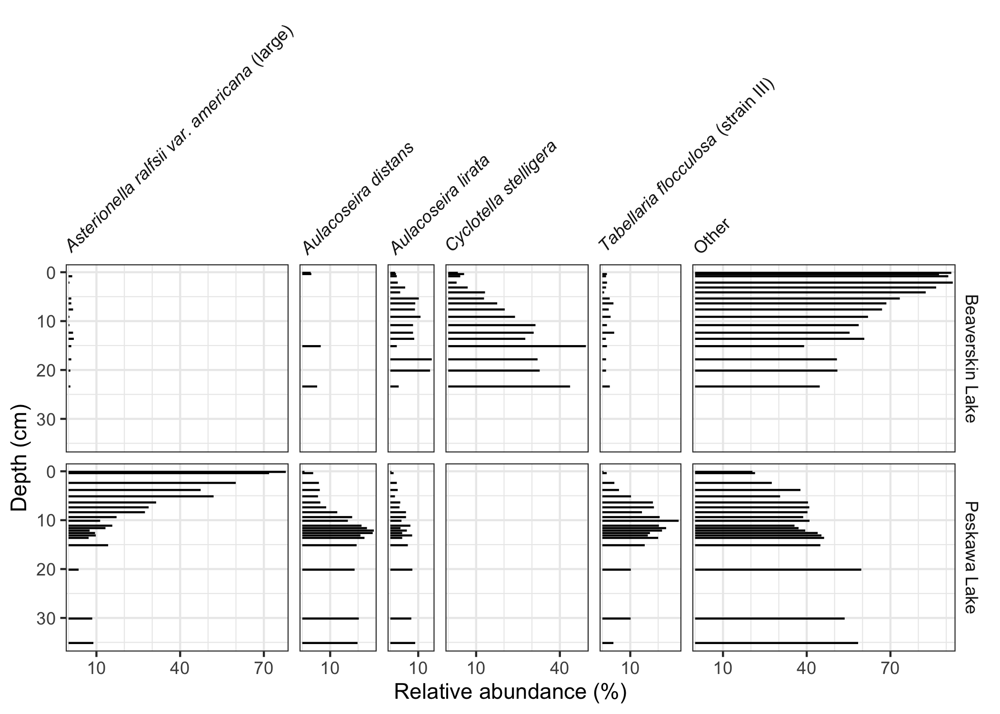

Working with multi-proxy paleo-archive data can be difficult. There are multiple locations, multiple parameters, and a lot of discipline-specific norms for plot layout and notation. This package simplifies a few workflows to promote the use of R for reproducible documents in paleo-based studies.
Examples
Strat diagrams
This package exposes a number of functions useful when creating stratigraphic diatrams, including facet_abundanceh(), which combines several other functions to help create stratigraphic plots using ggplot2. The geom_col_segsh() geometry draws horizontal sements, which are commonly used to show species abundance data.
library(ggplot2)
library(tidypaleo)
theme_set(theme_bw())
ggplot(keji_lakes_plottable, aes(x = rel_abund, y = depth)) +
geom_col_segsh() +
scale_y_reverse() +
facet_abundanceh(vars(taxon), grouping = vars(location)) +
labs(y = "Depth (cm)")